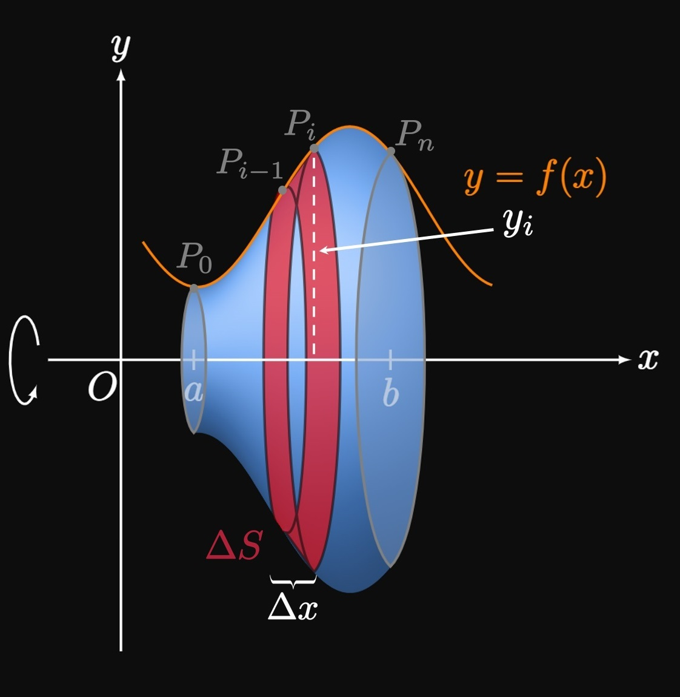

0 Preliminaries

1 Limits and Continuity

2 Differentiation Rules
- 2.1 Defining a Derivative
- 2.2 Differentiating Power, Exponential, and Sinusoidal Functions
- 2.3 Product Rule and Quotient Rule
- 2.4 Chain Rule
- 2.5 Implicit Differentiation and Differentiating Inverse Functions
- 2.6 Differentiating Logarithmic Functions
- 2.7 Related Rates
- 2.8 Linearization and Differentials
- 2.9 Hyperbolic Functions

3 Applications of Differentiation

4 Integration

5 Applications of Integration
- 5.1 Areas between Curves
- 5.2 Volumes with Cross Sections
- 5.3 Solids of Revolution
- 5.4 Shell Method
- 5.5 Work
- 5.6 Average Value of a Function

6 Integration Techniques

7 Further Applications of Integration

8 Differential Equations

9 Parametric Equations and Polar Coordinates

10 Infinite Sequences and Series
- 10.1 Sequences
- 10.2 Infinite Series and Divergence Test
- 10.3 Integral Test
- 10.4 Comparison Tests
- 10.5 Alternating Series
- 10.6 Absolute Convergence and the Ratio and Root Tests
- 10.7 Power Series
- 10.8 Taylor and Maclaurin Series